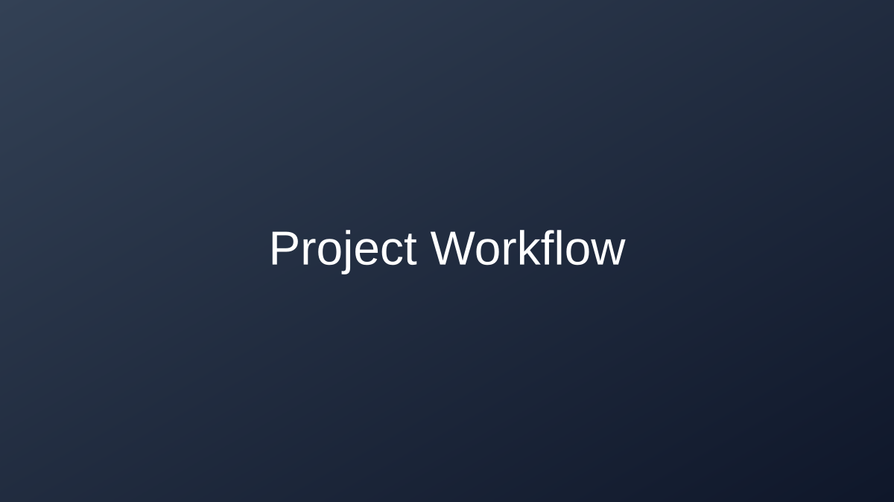

About Me
Background, Skills & Professional Goals
Who Am I?
I am Shiva Sagar, a data science student at Keuka College in Penn Yan, New York, where I have been enrolled since 2021. My academic path combines rigorous quantitative training with hands-on community engagement — I believe that the best data scientists are not just technically skilled but also empathetic communicators who understand the real-world contexts their models inhabit.
My interest in data science grew from a simple question: why do some decisions made with “the numbers” still go wrong? That curiosity has driven me to study everything from ensemble methods to ethical AI frameworks, and to build projects that prioritise reproducibility and transparency.
Beyond my studies, I serve as President of the Science Club, Treasurer of DACE (Disability, Accessibility, Community, and Engagement), and have previously led the Campus Activities Board. I also work as a Field Period and ePortfolio Demonstrator, helping fellow students document and present their learning.
Education
Bachelor of Science — Data Science Keuka College · Penn Yan, New York · 2021 – 2025
Relevant coursework:
- Machine Learning & Deep Learning
- Natural Language Processing
- Data Visualisation & Communication
- Statistical Methods & Probability
- Database Systems & SQL
- Research Methods & Ethics
Technical Skills
Languages & Frameworks
- Python — Advanced
- SQL — Intermediate
- R — Intermediate
- Bash / Shell — Beginner
Machine Learning
- Scikit-learn (classification, clustering, regression)
- Transformers / Hugging Face (BERT, T5)
- XGBoost, Random Forests, Logistic Regression
- K-Means Clustering, Dimensionality Reduction
Data & Visualisation
- Plotly (interactive charts)
- Matplotlib & Seaborn (static plots)
- Pandas & NumPy (data wrangling)
- Jupyter Notebooks & Quarto
DevOps & Tools
- Git & GitHub — Version control and Pages deployment
- Quarto — Scientific publishing & ePortfolio
- VS Code — Primary IDE
- GitHub Actions — CI/CD awareness
Certifications
| Certification | Issuer | Year |
|---|---|---|
| Python for Everybody Specialisation | Coursera / University of Michigan | 2023 |
| Introduction to Machine Learning | Kaggle | 2024 |
| Git & GitHub Foundations | GitHub Education | 2024 |
Professional Goals
“I want to build data systems that are not just accurate, but fair, transparent, and genuinely useful to the communities they serve.”
My near-term goals include:
Values & Approach
I believe every data science project should be fully reproducible. All my work is version-controlled with Git, documented with clear code comments, and published openly where possible. A result you cannot reproduce is not a result you can trust.
I prioritise fairness audits, bias assessments, and transparent model documentation in all projects — especially those targeting sensitive domains like healthcare and education. Powerful models carry real responsibility.
As Treasurer of DACE, I am personally committed to ensuring that digital products — including data dashboards and publications — meet accessibility standards (WCAG 2.1). Data should be readable by everyone.
Outside of Work
When I’m not training models or debugging pipelines, you’ll find me:
- Volunteering at Everybunny Counts Rabbit Rescue and H.O.R.S.E. of Connecticut
- Giving blood and staffing American Red Cross blood drives
- Mentoring youth through the Jim Casey Foundation Youth Leadership Institute
- Cheering on my college — formerly on the Keuka College cheerleading squad
Multimedia Highlights

Video: “Getting Started with Quarto” — J.J. Allaire & Hadley Wickham, rstudio::conf(2022). Source: YouTube.
Attributions
- Icons provided through the
quarto-ext/fontawesomeextension and Font Awesome Free (SIL OFL 1.1 licence). - Workflow diagram (SVG): original illustration created for this portfolio.
- Video embed: “Hello, Quarto!” keynote, rstudio::conf 2022 — J.J. Allaire & Mine Çetinkaya-Rundel. Used under YouTube’s standard embedding terms.